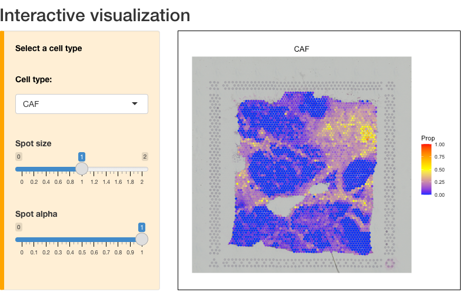

Cell type deconvolution and interaction analysis without reference
Source:vignettes/visium_BC.Rmd
visium_BC.RmdThis tutorial demonstrates how to run SpaCE to estimate cell identities and cell-cell interactions by using a breast cancer spatial transcriptomics (ST) data set from 10x Visium. Before running the tutorial, make sure that the SpaCE package and its dependencies have been installed.
Create SpaCE object
To read your ST data into R, user can create an SpaCE object by
create.SpaCE.object. Specifical, if user are analyzing a
Visium dataset, they only need to input “visiumPath”. Please make sure
that “visiumPath” point the standard output folders of 10x Visium, which
has both “filtered_feature_bc_matrix” and “spatial” folders.
The “filtered_feature_bc_matrix”`” folder includes
“barcodes.tsv.gz”: spot level barcodes
“features.tsv.gz”: list of genes
“matrix.mtx.gz”: (sparse) matrix of counts
The “spatial” folder includes
“tissue_positions_list.csv” : barcodes and spatial information
“tissue_lowres_image.png” : hematoxylin and eosin (H&E) image
“scalefactors_json.json” : scaling factors for adjusting the
coordinates
Here, we create an SpaCE object for this breast cancer visium dataset.
library(SpaCE)
# set the path to the in-house breast cancer ST data. User can set the paths to their own data.
visiumPath <- system.file("extdata", 'Visium_BC', package = 'SpaCE')
# load ST data to create an SpaCE object.
SpaCE_obj <- create.SpaCE.object(visiumPath = visiumPath)
# show this object.
str(SpaCE_obj)Show key quality control metrics
After creating the SpaCE object, user can use
SpaCE.visualize.metrics to show both UMI and gene counts
across all ST spots, respectively.
# plot the QC metrics.
library(patchwork)
p1 <- SpaCE.visualize.metrics(SpaCE_obj, itemQC="UMI")
p2 <- SpaCE.visualize.metrics(SpaCE_obj, itemQC="Gene")
p1+p2
Deconvolve ST data
By two stages, SpaCE.deconvolution would deconvolve all
mixtures of ST spots into malignant, immune, and stromal cells. SpaCE
first estimates malignant cell faction by a gene pattern dictionary of
copy number alterations (CNA) and expression changes in common
malignancies. Subsequently, based on an in-house hierarchical cell
lineage derived from single-cell RNA-seq data sets from diverse cancer
types, a constrained regression model is used to determine immune and
stromal cell fraction, and also include an unidentifiable component to
calibrate cellular density variations across tissue regions.
Specifically, user need to specify the cancer type of this tumor ST
data set by using cancerType parameter, which aim to select
cancer type-specific CNA or expression signature to infer malignant cell
fraction. When correlating expression profiles of ST spots to the cancer
type-specific signature, we set the cancer type-specific CNA signature
as the first option because chromosomal instability is widely considered
one consistent feature of human tumors. Alternatively, if no spots
strongly correlate with the CNA signature, the cancer type-specific
expression signature would be activated. This situation might result
from chromosomally stable cancer cells with low CNA. For cancer types
not included in our dictionary, we created a pan-cancer expression
signature by averaging all cancer type-specific expression
signatures.
How many caner types are in the gene pattern dictionary?
We built a gene pattern dictionary of copy number alterations (CNA) and expression changes for 30 solid tumor types. The cancer type-specific CNA signature of a cancer type was computed by averaging bulk tumor CNA values on gene levels across patients. For each cancer type, the lower quartile of patients sorted by total CNA burdens was excluded before calculating the CNA signature. The cancer type-specific expression signature of a cancer type was generated as log2 Fold Change of differential expression between tumor and normal samples. Several cancer types do not have expression signatures due to a lack of adequate normal samples (n < 10 patients). The pan-cancer expression signature was created by averaging all cancer type-specific expression signatures.

# deconvolve ST data
SpaCE_obj <- SpaCE.deconvolution(SpaCE_obj, cancerType="BRCA", coreNo=8)
# show the ST deconvolution results
SpaCE_obj@results$deconvolution[1:13,1:5]
50x102 59x19 14x94 47x13 73x43
Malignant 2.860636e-01 1 6.845966e-02 3.899756e-01 9.608802e-01
CAF 3.118545e-01 0 3.397067e-01 1.111980e-01 3.372692e-02
Endothelial 5.510895e-02 0 1.427060e-01 3.080531e-02 5.263544e-03
Plasma 2.213392e-02 0 1.507382e-02 1.183170e-02 9.071809e-06
B cell 3.885793e-03 0 9.271616e-02 1.406470e-01 1.329085e-06
T CD4 1.344389e-01 0 1.554305e-02 1.249414e-01 1.112392e-05
T CD8 7.578696e-03 0 2.514558e-07 1.379856e-03 1.123043e-06
NK 7.104005e-04 0 1.670019e-06 4.890387e-08 3.562557e-07
cDC 1.421632e-07 0 8.278023e-02 7.584295e-02 2.851146e-07
pDC 1.606443e-06 0 2.283754e-02 1.805671e-02 3.878344e-07
Macrophage 1.703304e-01 0 5.021248e-02 9.531511e-02 9.253645e-07
Mast 7.905067e-08 0 1.621498e-05 1.333430e-07 1.162099e-07
Neutrophil 1.380073e-05 0 9.528996e-07 1.167503e-08 9.908635e-05Visualize the cell type proportion
We provide SpaCE.visualize.deconvolution to show the
spatial distribution of cell type by setting the parameter
cellType.
# show the spatial distribution of malignant cells and macrophages.
p1 <- SpaCE.visualize.deconvolution(SpaCE_obj, cellType="Malignant")
p2 <- SpaCE.visualize.deconvolution(SpaCE_obj, cellType="Macrophage")
p1+p2
By setting the parameter interactive as
TRUE, user will open up a Shiny plot to interactively
visualize each cell type and adjust the size and alpha intensity of
spots.
# show the spatial distribution of malignant cells and macrophages.
SpaCE.visualize.deconvolution(SpaCE_obj, cellType="Malignant", interactive=TRUE)
Find cell-cell interaction
After decomposing cell fractions, SpaCE can infer intercellular interactions based on cell colocalization and ligand-receptor coexpression. Linear correlations of cell fraction between cell types are computed across all ST spots to evaluate cell-type colocalization. High positive correlations indicate that cell-type pairs tend to colocalize together. To infer physical interactions, SpaCE tests the co-expression of ligand and receptor genes within the same ST spot for the co-localized cell-type pairs.
Identify the co-localized cell-type pairs
In this breast tumor tissue, we identified several potential colocalized cell-type pairs (see the left panel in the following figure), such as CAFs with endothelial cells and M2 macrophages. To rule out a high cell fraction correlation caused by similar reference profiles, we compared the correlations between cell-type fractions and between cell-type reference profiles (see the right panel). Although the correlation of CAF and endothelial cell fractions is high, their profile similarity is also proportionally high. However, the similarity between CAF and M2 macrophage references was extremely low, indicating that the CAF-M2 colocalization is not simply due to profile similarity.
# calculate the cell-cell colocalization.
SpaCE_obj <- SpaCE.CCI.colocalization(SpaCE_obj)
# visualize the cell-cell colocalization.
SpaCE.visualize.colocalization(SpaCE_obj)
Analyze the L-R network enrichment within ST spots
Cell colocalization does not directly indicate physical interaction. Thus, we sought further evidence for cell-cell interactions by analyzing ligand-receptor (L-R) interactions within ST spots. From a previous study, we collected approximately 2,500 L-R pairs as an in-house L-R network. For each ST data set, SpaCE shuffled the L-R interaction network by using BiRewire package to generate 1,000 randomized networks while preserving directed degree distributions. For a spot, an L-R network score is defined as the sum of expression products between all L-R pairs, divided by the average random value from 1,000 randomized networks.
# calculate the L-R network score across ST spots.
SpaCE_obj <- SpaCE.CCI.LRNetworkScore(SpaCE_obj)
# visualize the cell-cell colocalization.
SpaCE.visualize.LRNetworkScore(SpaCE_obj)
The L-R network score at each ST spot indicates the overall intensities of ligand-receptor interactions at each location, but not the specific interactions between two cell types. Thus, SpaCE further performed an enrichment analysis of L-R network scores for each cell-type pair. For example, for the colocalization between CAF and M2 cells in the breast tumor tissue, SpaCE grouped all ST spots into four categories: CAF-M2 colocalized, CAF or M2 dominated, and others (see the left and middle panels in the following figure). We found that CAF-M2 colocalized spots have more substantial L-R interaction network scores than CAF/M2-dominated spots (right panel). These results lead to the prediction of CAF-M2 interactions, but not CAF-Endothelial interactions.
# calculate the L-R network score across ST spots.
SpaCE.CCI.cellTypePair(SpaCE_obj,cellTypePair=c("CAF","Macrophage M2"))
Explore cancer cell states
The gene expression profiles of tumor cells (i.e., cancer cell states) are determined by both tumor cells’ genetic background and cell-cell interactions from the surrounding environment. As an explorative extension, SpaCE can automatically explore the spatial distribution of different cancer cell states.
Based on the deconvolution results of the breast cancer dataset, we selected the ST spots with high fractions (> 0.7) of malignant cells as tumor spots. Then, SpaCE hierarchically clustered these malignant spots to infer different states. The Silhouette value, measuring the similarity among the ST spots within each cluster compared to other clusters, was used to select the optimal cluster number.
# further deconvolve malignant cell states
SpaCE_obj <- SpaCE.deconvolution.malignant(SpaCE_obj)
p1 <- SpaCE.visualize.deconvolution(SpaCE_obj, cellType="Malignant")
p2 <- SpaCE.visualize.deconvolution(SpaCE_obj, cellType="Cancer cell state A")
p3 <- SpaCE.visualize.deconvolution(SpaCE_obj, cellType="Cancer cell state B")
p1+p2+p3